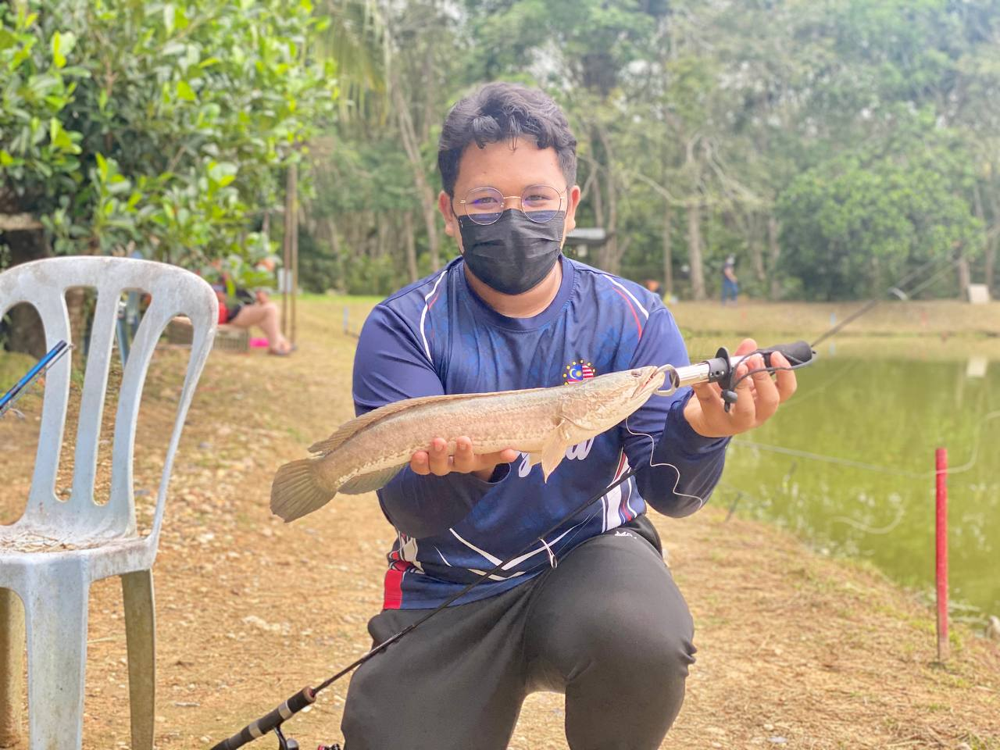

ABOUT ME
NOR MUHAMMAD ARIF
Hi, My name is Nor Muhammad Arif Bin Nor Fadzil.I was born on 4th June 2001. I'm now 23 years old. My hobbies are cooking and fishing. I was born in Ipoh,Perak. My ambition is to be a Police Officer. In last 2 years i graduated my Diploma In Multimedia from Kolej Poly-Tech Mara. I am a person who is positive about every aspect of life. There are many things i like to do, to see, and to experience.I am the youngest of 7 siblings. I have 4 sisters and 2 brothers. My favourite colour is black because it shows power,elegance and creativity. My height is 165cm. At my house i have 3 cats which are Tiger, Tokyo and Elizabeth. During degree life, i joined Police Undergraduate Voluntary Corps (SUKSIS). My favourite fruit is pear and my favourite drink is iced lemon tea.
Furthermore,Iam nice fun and friendly person. In my degree life, my bestfriends are Danial Haiqal, Zulkhairi , Adam Aiman, Irfan Wafi. I am honest and punctual. I work well in a team but also on my own as i like to set myself goals which i will achieve. I have a creative mind and am always up for new challenges. I am a Rugby player in secondary school as Back Line position. In my free times i will go out fishing with friends and give the fishes that I caught to my family members. My father's name is Nor Fadzil Bin Shoib , and my mother is Aida Suzzana Binti Ismail , my siblings consist Jauharah, Najibah , Nazeerah , Syahirah , Danial , Syukri and me.
GALLERY

EDUCATION
Primary School
My primary school is Sekolah Kebangsaan Jalan Pegah, Ipoh. I studied there from standard 1 to standard 6. I got 2A 3B in UPSR.I was one of school scout association and also a football player.
Secondary School
My secondary school is Clifford School Kuala Kangsar. I studied there from form 1 until form 5. I got 4 As in SPM. There are only boys in my school. My curriculum is police cadet and a rugby player.In there i have met many new friend and still contacting them until now.
University
After ended my secondary school and diploma,I entered University Technology Mara Kedah Branch in Sungai Petani,Kedah. I studied in Bachelor Information Science (Hons) Library Management for 6 semesters. My matric student number is 2023884982 and my course code is CDIM260.